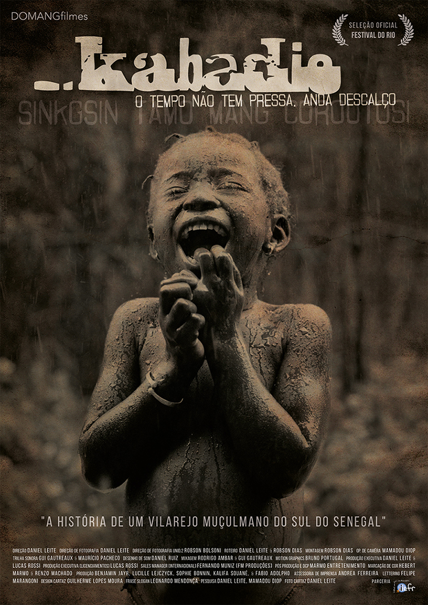
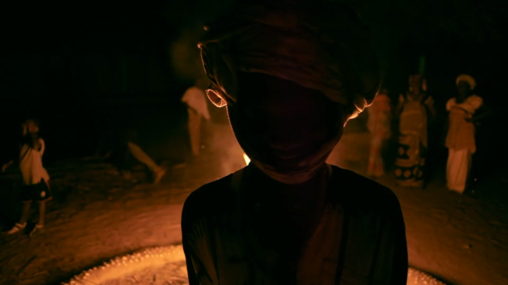
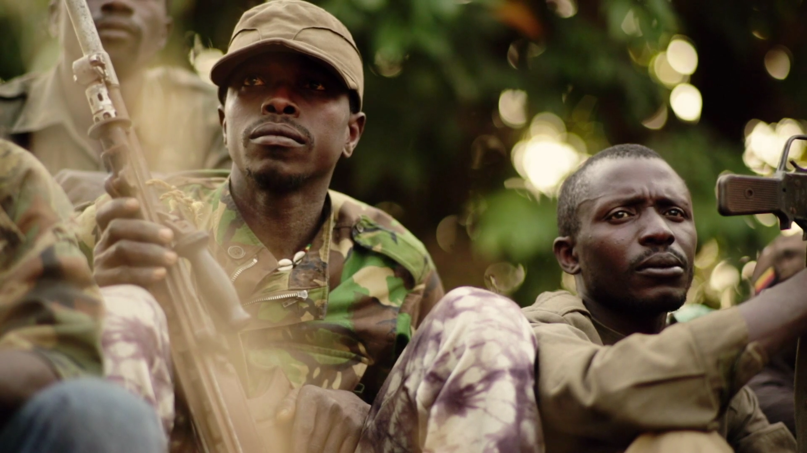

Feature documentary / Brazil–Senegal
KABADIO
o tempo não tem pressa, anda descalço
No coração do Senegal, um pequeno vilarejo muçulmano chamado Kabadio é uma espécie de éden místico protegido por líderes religiosos. Este é o cenário para fascinantes histórias de personagens reais que lutam para sobreviver, mantendo suas tradições, em meio à guerra civil e ao contrabando de mercadorias.
Synopsis
No coração do Senegal, um pequeno vilarejo muçulmano chamado Kabadio é uma espécie de éden místico protegido por líderes religiosos. Este é o cenário para fascinantes histórias de personagens reais que lutam para sobreviver, mantendo suas tradições, em meio à guerra civil e ao contrabando de mercadorias.
Project trajectory
- Official Selection — 7th AFRIFF Africa International Film Festival (Nigeria)
- Official Selection — 4e L'Appel des Chantiers (France)
- Official Selection — 2° Social Machinery Film Festival (Italy)
- Official Selection — 13ª Mostra de Cinema Documentário [CineDocumenta] (Brazil)
- Official Selection — 17th Urban Mediamakers Film Festival (USA)
- Official Selection — 7º Cine Cipó BH – Festival do Filme Insurgente (Brazil)
- Official Selection — 5ª Mostra Livre de Cinema (Brazil)
- Official Selection — 18º Festival do Rio de Cinema (Brazil)
- Official Selection — Cine MIS/SP – Museu da Imagem e do Som (Brazil)
- Official Selection — 3º Santos Film Festival (Brazil)
- Official Selection — 4th Sofia Biting Docs Film Festival (Bulgaria)
- Official Selection — 4th International Film Festival of Shimla (India)
- Official Selection — 3rd Black Star International Film Festival (Ghana)
- Official Selection — 1st Echo Film Festival BRICS (Russia)
- Official Selection — 3rd Heritales International Heritage Film Festival (Portugal)
Why this page matters


